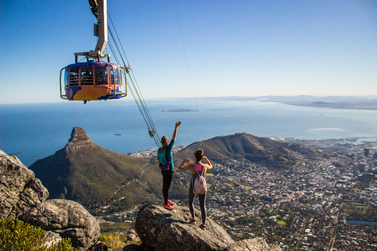
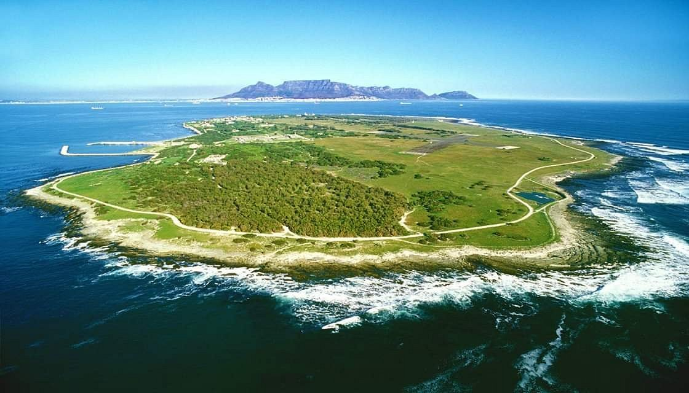
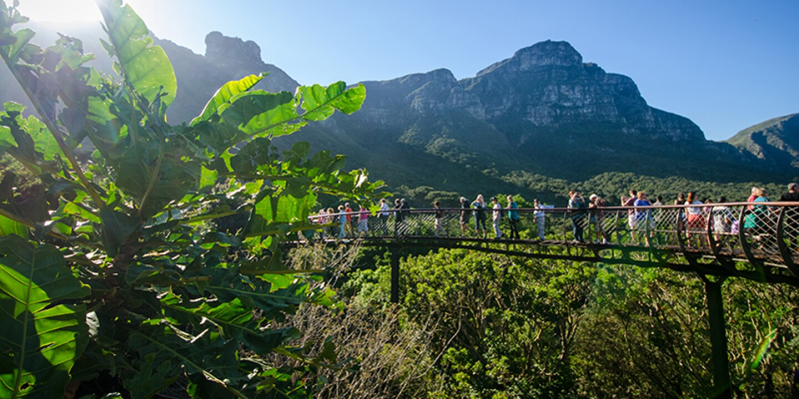

Cape Town South Africa
Cape Town South Africa is the southern most city in Africa and among the world’s most iconic destinations. A thriving coastal city with lots to fun things to do, there’s never a dull moment when exploring Cape Town South Africa. From beaches, buzzing nightlife, winelands, and mountains to charming neighbourhoods, museums, and excellent shopping and nightlife, there’s something for all tastes in Cape Town.
Five Fun Places to Visit in Cape Town, South Africa
- Table Mountain
- Robben Island
- Boulders Beach
- Kirstenbosch
- V&A Waterfront
1. Table Mountain
Table Mountain is a flat-topped mountain forming a prominent landmark overlooking the city of Cape Town in South Africa. It is 1084.6 meters (3,563-feet) tall and the mountain forms the northern end of the Cape Peninsula and lies within Table Mountain National Park. You can either hike to the top or ride the Table Mountain Aerial Cableway for amazing views. Some rock layers are around 500 million years old. It is perfect for nature lovers, incredible sunsets, views to the South Atlantic Ocean and the city of Cape Town spread beneath you.
2. Robben Island
Robben Island is an island in Table Bay, 6.9 kilometres west of the coast of Bloubergstrand, north of Cape Town, South Africa. It is one of the world’s most famous prisons. Robben Island is best known for its internment of political prisoners during South African apartheid Three former South African presidents, Kgalema Motlanthe, Jacob Zuma and for 18 of his 27 years of incarceration, Nelson Rolihlahla Mandela. Nelson Mandela was imprisoned for almost 27 years, many of them at Robben Island, together with many other anti-apartheid activists. Robben Island’s prison closed in 1996. Today, Robben Island is a UNESCO World Heritage historic site and a museum.
3. Boulders Beach

Boulders Beach is a sheltered beach made up of inlets between granite boulders, from which the name originated. It is located on the Cape Peninsula, in Simon's Town in the Western Cape province of South Africa. Being on the Indian Ocean side of the peninsula – water that’s a little warmer than the icy temperatures of Cape Town's Atlantic Ocean beaches. Boulders Beach is home to a colony of thousands of African penguins and it's great fun to watch them. It is a great place to soak up some sunshine and enjoy the unique experience of sharing a stretch of sand with these birds in their butler-style tailcoats.
4. Kirstenbosch
Kirstenbosch National Botanical Garden is world renowned for the beauty and diversity of the Cape flora it displays and for the magnificence of its setting against the eastern slopes of Table Mountain in Cape Town. The garden is one of 10 National Botanical Gardens covering five of South Africa's six different biomes and administered by the South African National Biodiversity Institute. Kirstenbosch grows only indigenous South African plants.\ It lives up to its reputation as the most beautiful garden in Africa and one of the great botanic gardens of the world.